Marinha do BrasilDepósito de Fardamento da Marinha no Rio de Janeiro
Programação Semanal de Atendimento
Monitor Logístico — Dashboard de acompanhamento de RM
Documento de uso interno · Outubro de 2026
A ferramenta monta a grade de atendimento da semana: quais RMs serão separadas em cada dia, para quais CAM, e por quê. Ela não decide sozinha — ela propõe, e o programador valida.
A proposta é montada a partir de duas prioridades:
No fim, sai um documento em PDF pronto para assinatura do Programador e do Encarregado do Abastecimento.
No dashboard, aba Programação. As outras abas são de acompanhamento geral e não têm senha; só a Programação exige login.
Aparece a tela de acesso. Enquanto você não entrar, nada da programação é exibido — nem para você, nem para quem abrir o dashboard de outro computador.
São os dados que o administrador cadastrou para você. Não existe tela de autocadastro: quem dá acesso é o administrador do sistema.
Depois de entrar, seu nome aparece no canto superior direito. É esse nome que vai impresso no documento como Programador do DepFMRJ, e é ele que fica registrado em cada publicação.
O sistema já abre na semana que vem, que é o caso normal: a programação é feita na semana anterior. As setas movem uma semana para trás ou para frente.
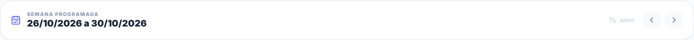
Esta é a parte mais importante do seu trabalho: entender o que o sistema propôs antes de aprovar.
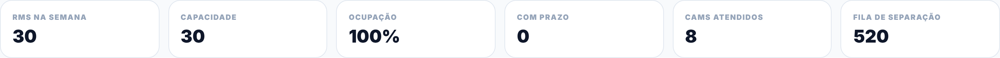
| Indicador | O que significa |
|---|---|
| RMs na Semana | Quantas RMs a proposta coloca na grade |
| Capacidade | Quanto a equipe consegue fazer, somando os cinco dias |
| Ocupação | O quanto da capacidade foi usado. 100% significa semana cheia |
| Com Prazo | Quantas dessas RMs vêm de mensagem com data para cumprir |
| CAMs Atendidos | Quantos clientes diferentes recebem alguma coisa na semana |
| Fila de Separação | Tudo que está esperando no WMS, não só o desta semana |
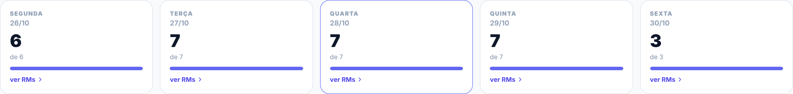
O número grande é o que foi programado; o "de N" abaixo é a capacidade do dia. Clique em ver RMs para abrir a lista.
Na lista do dia, a última coluna explica a razão de cada RM estar naquela data. É isso que permite você validar em vez de só aceitar.
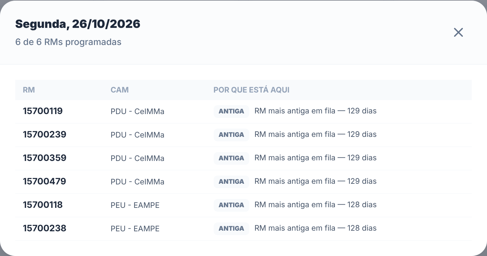
Esta tabela é o coração do documento final — é por ela que a chefia e os clientes leem a semana.
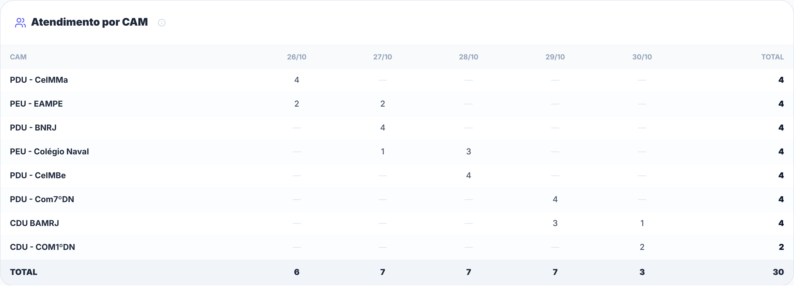
Quando chega uma mensagem cobrando atendimento com data, ela entra aqui. O sistema passa a tratar essas RMs como prioridade e as agenda de modo que a Expedição ainda tenha tempo de prontificar.
Copie da mensagem e cole no campo. Não precisa limpar o texto — o sistema procura os números de 8 dígitos e ignora o resto. Funciona com 15.757.540 e com 15757540.
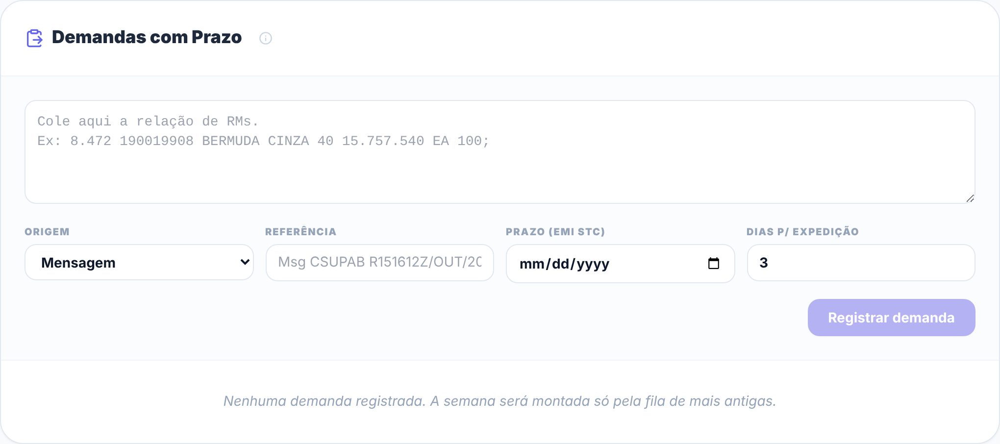
| Campo | O que colocar |
|---|---|
| Origem | Mensagem, Gerência de Fardamento ou Outra demanda |
| Referência | O identificador da mensagem, como Msg CSUPAB R151612Z/OUT/2026. Sai impresso no documento |
| Prazo (EMI STC) | A data que a origem cobrou para a emissão da STC |
| Dias p/ expedição | Quantos dias úteis a Expedição precisa depois da separação. O padrão é 3 |
Assim que você informa o prazo, o sistema calcula e mostra até quando a separação precisa terminar.
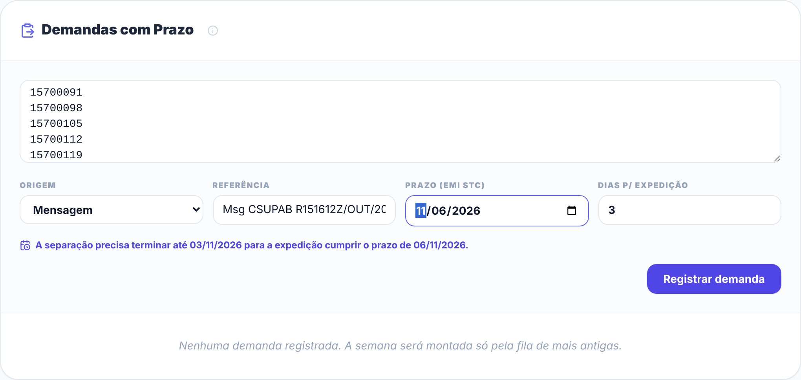
A demanda entra na lista e a grade se refaz sozinha. Repare na linha verde: ela confere cada RM contra o WMS e diz quantas realmente serão programadas.
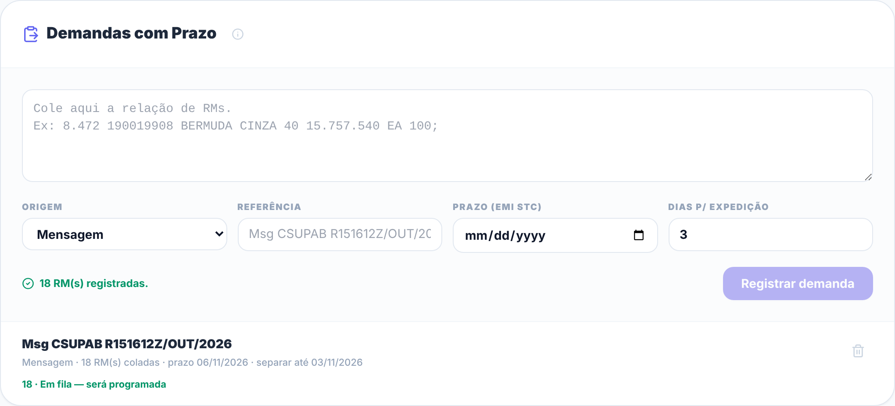
Essa checagem evita programar trabalho que não existe:
| Situação | O que significa |
|---|---|
| Em fila | Será programada. É o caso normal |
| Já conferida | Pronta, com a Expedição. O depósito não tem mais o que fazer |
| Já expedida | Saiu. Nada a fazer |
| Cancelada | Cancelada no WMS |
| Não encontrada | O número não existe na base. Confira se copiou certo |
A capacidade de cada dia da semana é medida no histórico: é a média de RMs que saíram naquele dia da semana, contando os dias parados. É por isso que sexta-feira aparece com capacidade menor — é o que a operação realmente entrega às sextas.
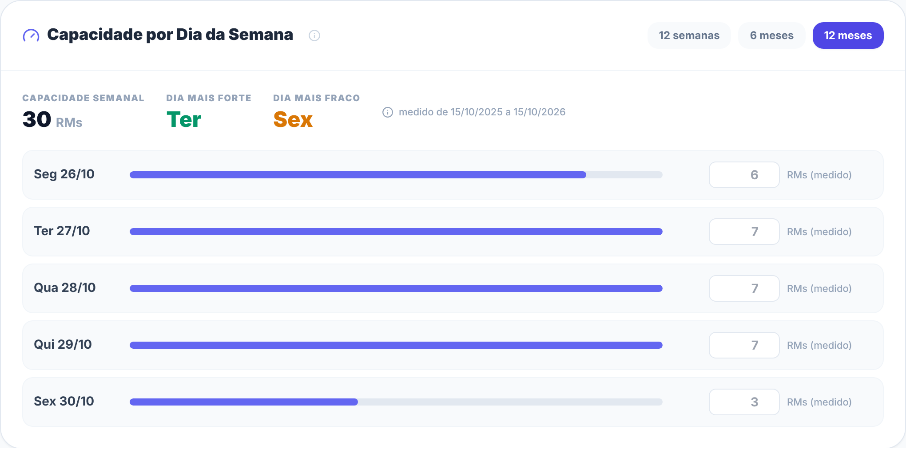
Feriado, licença, inventário, outra tarefa. O dia marcado tem a capacidade zerada e a grade se redistribui sozinha.
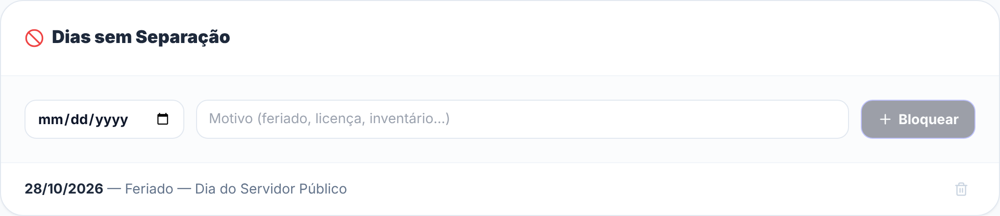
Veja o efeito na grade — a quarta-feira ficou sem programação e o trabalho foi para os outros dias:
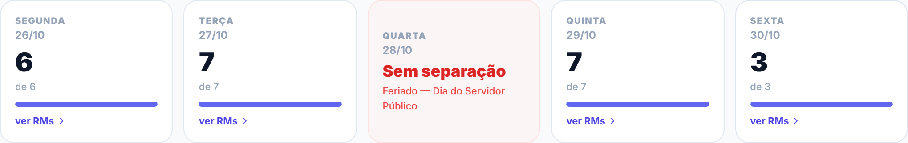
Publicar congela a programação da semana. A partir desse momento ela vira um registro: nada que você mexer depois altera o que já foi publicado.
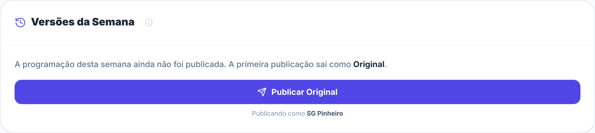
A primeira publicação da semana sai como Original. Clique no botão — você publica com o seu nome, o que está logado.
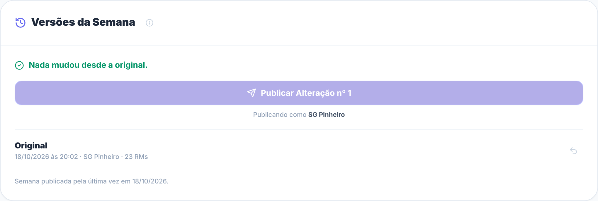
Antes de baixar, preencha o Encarregado do Abastecimento. O Programador já vem do seu login.
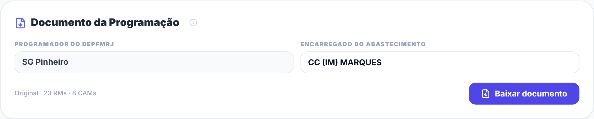
O PDF tem duas partes:
Surgiu demanda emergencial na quarta-feira? O procedimento é o mesmo de sempre: registre a demanda normalmente. O sistema refaz a grade e avisa que há mudanças não publicadas.
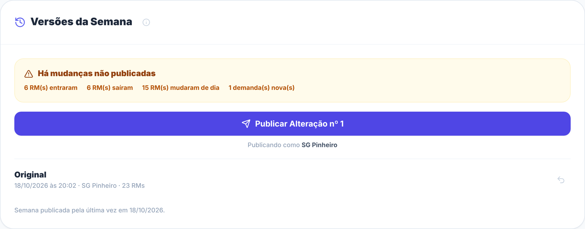
Ao publicar, a versão vira Alteração nº 1 (depois nº 2, e assim por diante). O documento passa a trazer o Anexo B, que detalha:
A sub-aba Andamento compara o que foi publicado com o que o WMS mostra agora.
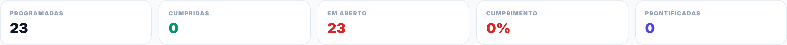
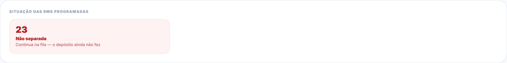
| Estado | Significa | Conta como cumprida? |
|---|---|---|
| Não separada | Continua na fila | Não |
| Separada | Conferida, entregue à Expedição | Sim |
| Prontificada | A Expedição já emitiu a STC ou GTC | Sim |
| Expedida | Saiu do depósito | Sim |
| Cancelada | Cancelada depois de programada | Não |
O cumprimento por CAM mostra onde a semana atrasou e também o que foi separado fora do plano:
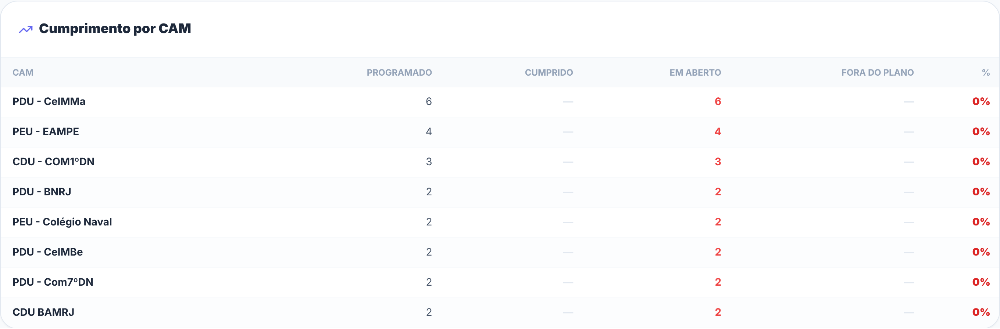
| Situação | O que fazer |
|---|---|
| A aba Programação pede login de novo | Normal após alguns dias. Basta entrar outra vez |
| Aparece "Banco não configurado" | Problema de configuração do site. Avise o administrador |
| Aparece "Não foi possível carregar a programação" | Verifique a internet e recarregue. Se persistir, avise o administrador |
| Aparece aviso vermelho de que não salvou | Recarregue a página para ver o que foi realmente gravado. Não continue trabalhando por cima |
| A grade mostra alerta vermelho de prazo | A demanda não cabe na capacidade até a data. Decida: ajustar capacidade, bloquear menos dias ou aceitar o atraso |
| Uma RM da mensagem aparece como "não encontrada" | Confira o número. Se estiver certo, a RM não chegou ao WMS — assunto para a origem da mensagem |
| Os dados do WMS estão velhos | Veja a data em "Última atualização" no topo. Se estiver atrasada, o problema é no robô que publica a planilha |
| Outro programador publicou e eu não vi | Recarregue a página. A lista de versões mostra quem publicou e quando |